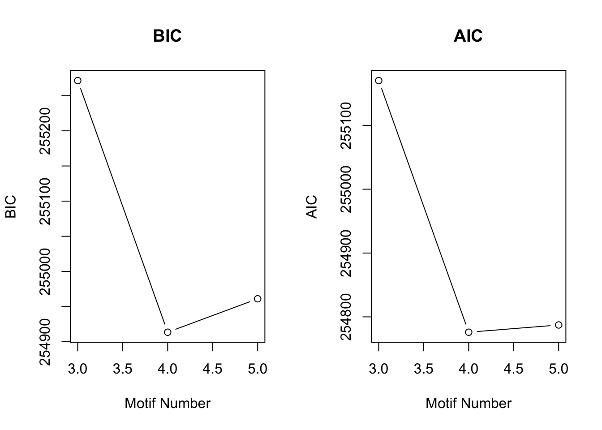
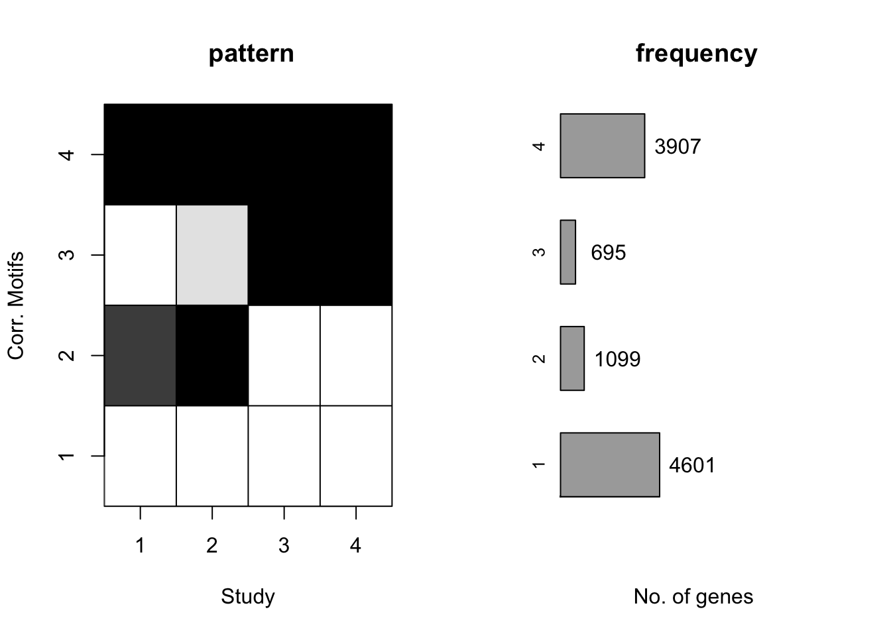
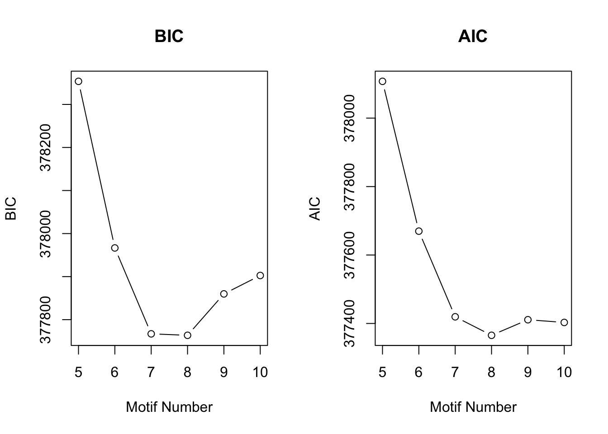
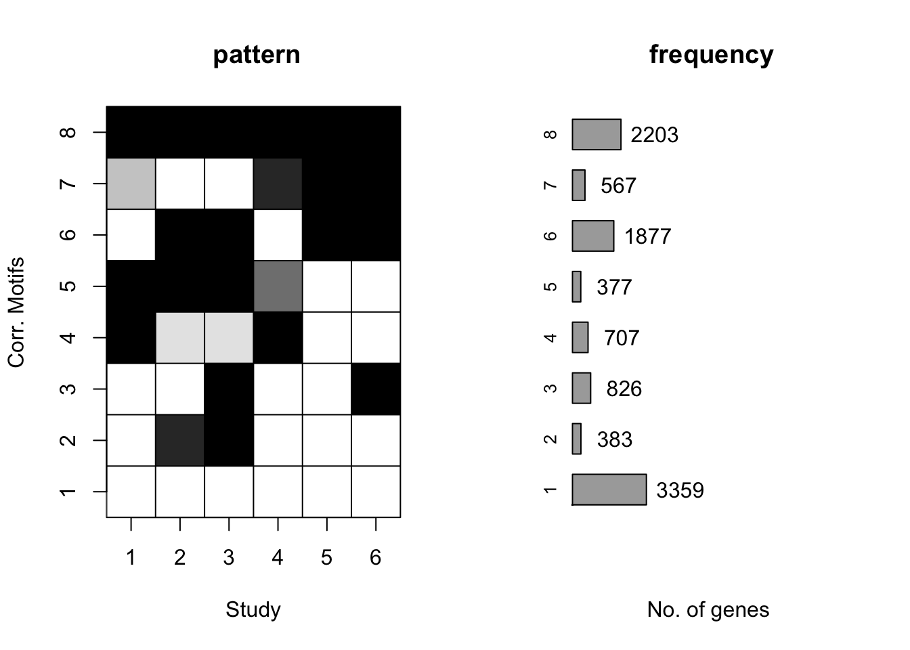

library("edgeR")## Warning: package 'edgeR' was built under R version 3.2.4## Loading required package: limma## Warning: package 'limma' was built under R version 3.2.4library("R.utils")## Warning: package 'R.utils' was built under R version 3.2.5## Loading required package: R.oo## Warning: package 'R.oo' was built under R version 3.2.5## Loading required package: R.methodsS3## Warning: package 'R.methodsS3' was built under R version 3.2.3## R.methodsS3 v1.7.1 (2016-02-15) successfully loaded. See ?R.methodsS3 for help.## R.oo v1.21.0 (2016-10-30) successfully loaded. See ?R.oo for help.##
## Attaching package: 'R.oo'## The following objects are masked from 'package:methods':
##
## getClasses, getMethods## The following objects are masked from 'package:base':
##
## attach, detach, gc, load, save## R.utils v2.4.0 (2016-09-13) successfully loaded. See ?R.utils for help.##
## Attaching package: 'R.utils'## The following object is masked from 'package:utils':
##
## timestamp## The following objects are masked from 'package:base':
##
## cat, commandArgs, getOption, inherits, isOpen, parse, warningslibrary("plyr")## Warning: package 'plyr' was built under R version 3.2.5library("limma")
library("Biobase")## Loading required package: BiocGenerics## Loading required package: parallel##
## Attaching package: 'BiocGenerics'## The following objects are masked from 'package:parallel':
##
## clusterApply, clusterApplyLB, clusterCall, clusterEvalQ,
## clusterExport, clusterMap, parApply, parCapply, parLapply,
## parLapplyLB, parRapply, parSapply, parSapplyLB## The following object is masked from 'package:limma':
##
## plotMA## The following objects are masked from 'package:stats':
##
## IQR, mad, xtabs## The following objects are masked from 'package:base':
##
## anyDuplicated, append, as.data.frame, as.vector, cbind,
## colnames, do.call, duplicated, eval, evalq, Filter, Find, get,
## grep, grepl, intersect, is.unsorted, lapply, lengths, Map,
## mapply, match, mget, order, paste, pmax, pmax.int, pmin,
## pmin.int, Position, rank, rbind, Reduce, rownames, sapply,
## setdiff, sort, table, tapply, union, unique, unlist, unsplit## Welcome to Bioconductor
##
## Vignettes contain introductory material; view with
## 'browseVignettes()'. To cite Bioconductor, see
## 'citation("Biobase")', and for packages 'citation("pkgname")'.library("GEOquery")## Setting options('download.file.method.GEOquery'='auto')## Setting options('GEOquery.inmemory.gpl'=FALSE)##
## Attaching package: 'GEOquery'## The following object is masked from 'package:R.utils':
##
## gunziplibrary("plyr")
#theme_set(theme_bw(base_size = 16))
library("biomaRt")
library("colorfulVennPlot")## Loading required package: gridlibrary("VennDiagram")## Warning: package 'VennDiagram' was built under R version 3.2.5## Loading required package: futile.logger## Warning: package 'futile.logger' was built under R version 3.2.5library("gridExtra")## Warning: package 'gridExtra' was built under R version 3.2.4##
## Attaching package: 'gridExtra'## The following object is masked from 'package:Biobase':
##
## combine## The following object is masked from 'package:BiocGenerics':
##
## combinelibrary("car")## Warning: package 'car' was built under R version 3.2.5##
## Attaching package: 'car'## The following object is masked from 'package:VennDiagram':
##
## ellipselibrary("topGO")## Loading required package: graph##
## Attaching package: 'graph'## The following object is masked from 'package:plyr':
##
## join## Loading required package: GO.db## Loading required package: AnnotationDbi## Warning: package 'AnnotationDbi' was built under R version 3.2.3## Loading required package: stats4## Loading required package: IRanges## Warning: package 'IRanges' was built under R version 3.2.3## Loading required package: S4Vectors## Warning: package 'S4Vectors' was built under R version 3.2.3##
## Attaching package: 'S4Vectors'## The following object is masked from 'package:plyr':
##
## rename##
## Attaching package: 'IRanges'## The following object is masked from 'package:plyr':
##
## desc## The following object is masked from 'package:R.oo':
##
## trim## Loading required package: DBI## Warning: package 'DBI' was built under R version 3.2.5## ## Loading required package: SparseM## Warning: package 'SparseM' was built under R version 3.2.5##
## Attaching package: 'SparseM'## The following object is masked from 'package:base':
##
## backsolve## Warning: replacing previous import by 'graph::.__C__dist' when loading
## 'topGO'##
## groupGOTerms: GOBPTerm, GOMFTerm, GOCCTerm environments built.##
## Attaching package: 'topGO'## The following object is masked from 'package:IRanges':
##
## members## The following object is masked from 'package:grid':
##
## depthlibrary("rowr")##
## Attaching package: 'rowr'## The following object is masked from 'package:plyr':
##
## countlibrary("Cormotif")## Loading required package: affylibrary("ggfortify")## Warning: package 'ggfortify' was built under R version 3.2.5## Loading required package: ggplot2## Warning: package 'ggplot2' was built under R version 3.2.4library("dplyr")## Warning: package 'dplyr' was built under R version 3.2.5##
## Attaching package: 'dplyr'## The following objects are masked from 'package:rowr':
##
## coalesce, count## The following object is masked from 'package:AnnotationDbi':
##
## select## The following objects are masked from 'package:IRanges':
##
## collapse, desc, intersect, setdiff, slice, union## The following objects are masked from 'package:S4Vectors':
##
## intersect, rename, setdiff, union## The following object is masked from 'package:graph':
##
## union## The following object is masked from 'package:car':
##
## recode## The following object is masked from 'package:gridExtra':
##
## combine## The following object is masked from 'package:biomaRt':
##
## select## The following object is masked from 'package:Biobase':
##
## combine## The following objects are masked from 'package:BiocGenerics':
##
## combine, intersect, setdiff, union## The following objects are masked from 'package:plyr':
##
## arrange, count, desc, failwith, id, mutate, rename, summarise,
## summarize## The following objects are masked from 'package:stats':
##
## filter, lag## The following objects are masked from 'package:base':
##
## intersect, setdiff, setequal, unionlibrary("tidyr")## Warning: package 'tidyr' was built under R version 3.2.5##
## Attaching package: 'tidyr'## The following object is masked from 'package:IRanges':
##
## expand## The following object is masked from 'package:R.utils':
##
## extractlibrary("statmod")## Warning: package 'statmod' was built under R version 3.2.5library("qtlcharts")## Warning: package 'qtlcharts' was built under R version 3.2.5library("mygene")## Loading required package: GenomicFeatures## Warning: package 'GenomicFeatures' was built under R version 3.2.3## Loading required package: GenomeInfoDb## Warning: package 'GenomeInfoDb' was built under R version 3.2.3## Loading required package: GenomicRanges## Warning: package 'GenomicRanges' was built under R version 3.2.3##
## Attaching package: 'GenomicFeatures'## The following object is masked from 'package:topGO':
##
## genes##
## Attaching package: 'mygene'## The following object is masked from 'package:dplyr':
##
## query## The following object is masked from 'package:biomaRt':
##
## getGene# Make the labels for the data
After_removal_sample_info <- read.csv("~/Desktop/Endoderm_TC/After_removal_sample_info.csv")
Species <- After_removal_sample_info$Species
species <- After_removal_sample_info$Species
day <- After_removal_sample_info$Day
individual <- After_removal_sample_info$Individual
Sample_ID <- After_removal_sample_info$Sample_ID
labels <- paste(Sample_ID, day, sep=" ")
rep_batch <- After_removal_sample_info$Reprogramming_batch
# Load the data
gene_counts_cutoff_norm_data <- read.delim("~/Desktop/Endoderm_TC/ashlar-trial/data/gene_counts_cutoff_norm_data.txt")
# Take the TMM of the genes that meet the criteria
dge_in_cutoff <- DGEList(counts=as.matrix(gene_counts_cutoff_norm_data), genes=rownames(gene_counts_cutoff_norm_data), group = as.character(t(labels)))
dge_in_cutoff <- calcNormFactors(dge_in_cutoff)
# Take the cpm of these genes
cpm_in_cutoff <- cpm(dge_in_cutoff, normalized.lib.sizes=TRUE, log=TRUE)
head(cpm_in_cutoff)## D0_20157 D0_20961 D0_21792 D0_28162 D0_28815 D0_28815_0116
## ENSG00000000003 7.701040 7.200516 7.891297 7.568247 7.692448 7.440323
## ENSG00000000419 6.636382 6.113621 7.112055 6.709967 6.422067 6.430912
## ENSG00000000457 3.538987 3.742002 3.868639 3.783351 3.781481 4.288528
## ENSG00000000460 5.621087 5.938475 5.939335 5.351684 5.533441 5.576324
## ENSG00000001036 6.599993 6.348118 6.798451 6.494443 6.682924 6.783284
## ENSG00000001084 6.819346 6.972230 7.038625 6.900445 6.848138 6.783284
## D0_29089 D0_3647 D0_36470116 D0_3649 D0_3649_0116
## ENSG00000000003 7.252022 7.997706 7.981695 7.735704 7.643260
## ENSG00000000419 6.487537 5.748547 6.676749 5.522019 6.120214
## ENSG00000000457 4.017727 4.512511 4.856663 4.836745 4.523916
## ENSG00000000460 5.508086 5.725808 5.647463 5.430649 5.174616
## ENSG00000001036 6.975683 6.660781 6.525819 6.415137 6.443665
## ENSG00000001084 6.824913 6.923119 6.882981 6.419743 6.112310
## D0_40300 D0_40300_0116 D0_4955 D0_4955_0116 D1_20157
## ENSG00000000003 7.741599 7.234615 8.065387 7.400429 7.680594
## ENSG00000000419 5.510659 5.607060 5.916580 5.539903 6.912751
## ENSG00000000457 4.778107 4.683637 5.046321 4.662025 3.724849
## ENSG00000000460 5.401721 5.714747 5.497679 5.652473 5.502286
## ENSG00000001036 6.508676 5.811720 6.653186 5.918898 6.392675
## ENSG00000001084 6.621670 6.572928 6.583055 6.512036 6.942701
## D1_20157_0116 D1_20961 D1_21792 D1_28162 D1_28815
## ENSG00000000003 7.591836 7.344222 7.504967 7.568096 7.710863
## ENSG00000000419 6.890723 6.898007 6.938775 6.727210 7.023667
## ENSG00000000457 3.532229 3.542748 3.411270 3.454572 3.948357
## ENSG00000000460 5.666418 5.687791 5.711539 5.561867 5.747043
## ENSG00000001036 6.284060 5.865163 5.834089 5.630992 6.060346
## ENSG00000001084 6.955371 6.885070 6.951505 6.878321 7.039034
## D1_28815_0116 D1_29089 D1_3647 D1_3647_0116 D1_3649
## ENSG00000000003 7.365692 7.398813 7.405906 7.278928 7.712547
## ENSG00000000419 6.841343 6.918158 5.748553 6.139836 5.960600
## ENSG00000000457 3.985236 3.576274 4.661748 4.706051 5.029290
## ENSG00000000460 6.061759 5.747800 5.423997 5.421981 5.646806
## ENSG00000001036 6.287696 6.414474 5.847053 6.112034 6.406662
## ENSG00000001084 6.839416 6.742004 6.697606 6.411274 6.380047
## D1_3649_0116 D1_40300 D1_40300_0116 D1_4955 D1_4955_0116
## ENSG00000000003 7.760939 7.897668 7.176952 7.853640 7.476494
## ENSG00000000419 6.318064 6.014897 5.591566 6.285890 6.203973
## ENSG00000000457 4.832781 4.826715 4.606156 5.030564 4.647029
## ENSG00000000460 5.420081 5.641322 5.663199 5.484480 5.710500
## ENSG00000001036 6.315321 6.161782 5.729591 6.415505 5.949833
## ENSG00000001084 6.138892 6.587934 6.509523 6.599114 6.493968
## D2_20157 D2_20157_0116 D2_20961 D2_21792 D2_28162 D2_28815
## ENSG00000000003 7.194251 7.164605 6.599008 6.854914 6.927111 6.041746
## ENSG00000000419 6.865526 6.935486 6.438430 6.715177 6.494477 7.019443
## ENSG00000000457 3.892885 3.675642 3.631069 3.580283 3.761114 5.194333
## ENSG00000000460 4.901693 5.022686 4.908176 5.248762 4.960782 5.601145
## ENSG00000001036 7.119024 6.970824 6.324686 6.458355 6.083169 5.936577
## ENSG00000001084 7.078848 7.312100 7.031449 7.127071 7.260304 7.578450
## D2_28815_0116 D2_29089 D2_3647 D2_3647_0116 D2_3649
## ENSG00000000003 6.904852 6.948786 7.200744 6.874440 7.693209
## ENSG00000000419 6.437922 6.627171 5.622258 5.587867 5.950088
## ENSG00000000457 4.462252 3.881596 4.648482 4.791293 5.096432
## ENSG00000000460 5.656715 5.426675 5.160636 4.891071 5.237107
## ENSG00000001036 6.436172 6.487687 5.833372 5.858253 6.155517
## ENSG00000001084 6.965543 6.768160 7.201991 6.814282 6.671147
## D2_3649_0116 D2_40300 D2_40300_0116 D2_4955 D2_4955_0116
## ENSG00000000003 7.571580 7.405571 6.920761 7.740087 7.105074
## ENSG00000000419 5.980341 5.836404 5.564596 6.261562 5.899645
## ENSG00000000457 5.169553 5.037886 4.927691 5.199936 5.033242
## ENSG00000000460 4.829506 5.066290 5.019416 5.098093 5.351812
## ENSG00000001036 5.879609 6.041511 5.561825 6.213666 5.670305
## ENSG00000001084 6.685711 6.625946 6.978004 6.491272 6.943880
## D3_20157 D3_20157_0116 D3_20961 D3_21792 D3_28162 D3_28815
## ENSG00000000003 6.666791 7.073701 6.641993 6.494495 6.831458 7.003998
## ENSG00000000419 6.314918 6.260451 6.300045 6.564384 6.424354 6.538916
## ENSG00000000457 3.720348 3.797594 3.727162 4.064173 3.777416 4.140524
## ENSG00000000460 4.790001 4.483430 4.834621 5.221406 4.302096 4.337427
## ENSG00000001036 6.833472 6.880953 6.405639 6.410161 6.031297 6.654231
## ENSG00000001084 6.969294 6.777654 6.776683 6.953032 7.235620 7.146500
## D3_28815_0116 D3_29089 D3_3647 D3_3647_0116 D3_3649
## ENSG00000000003 7.116187 6.848348 6.884620 6.981322 7.194815
## ENSG00000000419 6.311691 6.346197 5.421963 5.450097 5.509625
## ENSG00000000457 4.230550 3.641236 4.867323 4.778083 5.222750
## ENSG00000000460 5.309511 4.806150 4.529827 3.834870 3.968508
## ENSG00000001036 6.586000 6.866553 5.729534 5.932712 5.680199
## ENSG00000001084 6.812988 6.813322 7.250586 6.938060 6.695653
## D3_3649_0116 D3_40300 D3_40300_0116 D3_4955 D3_4955_0116
## ENSG00000000003 7.594261 6.954244 7.132407 6.967518 7.099980
## ENSG00000000419 5.605193 5.465510 5.716738 5.714726 5.635075
## ENSG00000000457 4.932993 5.297377 4.956548 5.358963 5.120302
## ENSG00000000460 3.326550 4.437822 4.778745 3.979366 4.495500
## ENSG00000001036 5.809234 5.885308 5.447973 5.767853 5.689416
## ENSG00000001084 6.793641 6.635821 6.770057 6.822208 7.126185# Take the mean of the technical replicates when available
# Day 0 technical replicates
D0_28815 <- as.data.frame(apply(cpm_in_cutoff[,5:6], 1, mean))
D0_3647 <- as.data.frame(apply(cpm_in_cutoff[,8:9], 1, mean))
D0_3649 <- as.data.frame(apply(cpm_in_cutoff[,10:11], 1, mean))
D0_40300 <- as.data.frame(apply(cpm_in_cutoff[,12:13], 1, mean))
D0_4955 <- as.data.frame(apply(cpm_in_cutoff[,14:15], 1, mean))
# Day 1 technical replicates
D1_20157 <- as.data.frame(apply(cpm_in_cutoff[,16:17], 1, mean))
D1_28815 <- as.data.frame(apply(cpm_in_cutoff[,21:22], 1, mean))
D1_3647 <- as.data.frame(apply(cpm_in_cutoff[,24:25], 1, mean))
D1_3649 <- as.data.frame(apply(cpm_in_cutoff[,26:27], 1, mean))
D1_40300 <- as.data.frame(apply(cpm_in_cutoff[,28:29], 1, mean))
D1_4955 <- as.data.frame(apply(cpm_in_cutoff[,30:31], 1, mean))
# Day 2 technical replicates
D2_20157 <- as.data.frame(apply(cpm_in_cutoff[,32:33], 1, mean))
D2_28815 <- as.data.frame(apply(cpm_in_cutoff[,37:38], 1, mean))
D2_3647 <- as.data.frame(apply(cpm_in_cutoff[,40:41], 1, mean))
D2_3649 <- as.data.frame(apply(cpm_in_cutoff[,42:43], 1, mean))
D2_40300 <- as.data.frame(apply(cpm_in_cutoff[,44:45], 1, mean))
D2_4955 <- as.data.frame(apply(cpm_in_cutoff[,46:47], 1, mean))
# Day 3 technical replicates
D3_20157 <- as.data.frame(apply(cpm_in_cutoff[,48:49], 1, mean))
D3_28815 <- as.data.frame(apply(cpm_in_cutoff[,53:54], 1, mean))
D3_3647 <- as.data.frame(apply(cpm_in_cutoff[,56:57], 1, mean))
D3_3649 <- as.data.frame(apply(cpm_in_cutoff[,58:59], 1, mean))
D3_40300 <- as.data.frame(apply(cpm_in_cutoff[,60:61], 1, mean))
D3_4955 <- as.data.frame(apply(cpm_in_cutoff[,62:63], 1, mean))
# Create a new data frame with all of the combined technical replicates
mean_tech_reps <- cbind(cpm_in_cutoff[,1:4], D0_28815, cpm_in_cutoff[,7], D0_3647, D0_3649, D0_40300, D0_4955, D1_20157, cpm_in_cutoff[,18:20], D1_28815, cpm_in_cutoff[,23], D1_3647, D1_3649, D1_40300, D1_4955, D2_20157, cpm_in_cutoff[,34:36], D2_28815, cpm_in_cutoff[,39], D2_3647, D2_3649, D2_40300, D2_4955, D3_20157, cpm_in_cutoff[,50:52], D3_28815, cpm_in_cutoff[,55], D3_3647, D3_3649, D3_40300, D3_4955)
colnames(mean_tech_reps) <- c("D0_20157", "D0_20961", "D0_21792", "D0_28162", "D0_28815", "D0_29089", "D0_3647", "D0_3649", "D0_40300", "D0_4955", "D1_20157", "D1_20961", "D1_21792", "D1_28162", "D1_28815", "D1_29089", "D1_3647", "D1_3649", "D1_40300", "D1_4955", "D2_20157", "D2_20961", "D2_21792", "D2_28162", "D2_28815", "D2_29089", "D2_3647", "D2_3649", "D2_40300", "D2_4955", "D3_20157", "D3_20961", "D3_21792", "D3_28162", "D3_28815", "D3_29089", "D3_3647", "D3_3649", "D3_40300", "D3_4955")
dim(mean_tech_reps)## [1] 10304 40# Create a factor for the experiments, with the levels ordered such that as.numeric converts them to numbers in a defined manner
# Note: there are 6 human biological replicates and 4 chimp biological replicates
species <- c("H", "H","H","H","H","H", "C", "C","C","C",
"H","H","H","H","H","H", "C", "C","C","C",
"H","H","H","H","H","H", "C", "C","C","C",
"H","H","H","H","H","H", "C", "C","C","C")
day <- c("0", "0","0","0","0","0","0", "0", "0", "0", "1","1","1","1","1","1","1","1", "1","1",
"2", "2","2","2","2","2","2","2","2", "2",
"3", "3","3","3","3","3","3","3", "3", "3")
group_fac <- factor(paste(species, day, sep = "."),
levels = c("C.0", "C.1", "C.2", "C.3",
"H.0", "H.1", "H.2", "H.3"))
groupid <- as.numeric(group_fac)
# Conditions to compare:
# day0, day1, day2, day3,
compid_day <- data.frame(c1 = c(1, 2, 3, 4),
c2 = c(5, 6, 7, 8))
compid_tran <- data.frame(c1 = c(1, 1, 1, 5, 5, 5),
c2 = c(2, 3, 4, 6, 7, 8))
compid_all <- data.frame(c1 = c(1, 2, 3, 4, 1, 2, 3, 5, 6, 7),
c2 = c(5, 6, 7, 8, 2, 3, 4, 6, 7, 8))
compid_chimp <- data.frame(c1=c(1,2,3), c2=c(2,3,4))
compid_human <- data.frame(c1=c(5,6,7), c2=c(6,7,8))# Setup matrix
mean_tech_reps_matrix <- as.matrix(mean_tech_reps, nrow=10304, ncol = 40)
mean_tech_reps_matrix[1:10304,1:40] = as.numeric(as.character(mean_tech_reps_matrix[1:10304,1:40]))
colnames(mean_tech_reps_matrix) <- colnames(mean_tech_reps)
rownames(mean_tech_reps_matrix) <- rownames(mean_tech_reps)
#x <- matrix(mean_tech_reps, nrow=40)
#interspecies differences at each day
set.seed(12345)
cormotif_day <- cormotiffit(exprs = mean_tech_reps_matrix, groupid = groupid, compid = compid_day, K = 3:5)## [1] "We have run the first 50 iterations for K=3"
## [1] "We have run the first 100 iterations for K=3"
## [1] "We have run the first 50 iterations for K=4"
## [1] "We have run the first 100 iterations for K=4"
## [1] "We have run the first 50 iterations for K=5"
## [1] "We have run the first 100 iterations for K=5"plotIC(cormotif_day)
plotMotif(cormotif_day)
gene_prob_day <- cormotif_day$bestmotif$p.post
rownames(gene_prob_day) <- rownames(cpm_in_cutoff)
# Note: Originally, the code had the "sep2013 archive" but it looks like that has been disabled online.
ensembl <- useMart(host = "dec2013.archive.ensembl.org",
biomart = "ENSEMBL_MART_ENSEMBL",
dataset = "hsapiens_gene_ensembl")
gene_names <- getBM(filters= "ensembl_gene_id", attributes= c("ensembl_gene_id","hgnc_symbol") ,values=rownames(gene_prob_day),mart= ensembl)
gene_prob_day <- gene_prob_day[(rownames(gene_prob_day) %in% gene_names[,1]),]
#rownames(gene_names) <- gene_names[,1]
gene_names <- gene_names[!duplicated(gene_names[,1]),]
all(rownames(gene_prob_day) == gene_names[,1])## [1] TRUErownames(gene_prob_day) <- gene_names[,2]
prob_sp_1 <- rownames(gene_prob_day[(gene_prob_day[,1] < 0.5 & gene_prob_day[,2] <0.5 & gene_prob_day[,3] <0.5 & gene_prob_day[,4] <0.5),])
length(prob_sp_1)## [1] 4474#4495
prob_sp_2 <- rownames(gene_prob_day[(gene_prob_day[,1] >0.7 & gene_prob_day[,2] >0.9 & gene_prob_day[,3] <0.5 & gene_prob_day[,4] <0.5),])
length(prob_sp_2)## [1] 352#352
prob_sp_3 <- rownames(gene_prob_day[(gene_prob_day[,1] <0.5 & gene_prob_day[,2] <0.5 & gene_prob_day[,3] > 0.9 & gene_prob_day[,4] > 0.9),])
length(prob_sp_3)## [1] 221#221
prob_sp_4 <- rownames(gene_prob_day[(gene_prob_day[,1] >0.9& gene_prob_day[,2] >0.9 & gene_prob_day[,3]>0.9 & gene_prob_day[,4] >0.9),])
length(prob_sp_4)## [1] 2497#2509#differences during diffentiation
set.seed(12345)
cormotif_tran <- cormotiffit(exprs = mean_tech_reps_matrix, groupid = groupid,
compid = compid_tran, K = 5:10)## [1] "We have run the first 50 iterations for K=5"
## [1] "We have run the first 100 iterations for K=5"
## [1] "We have run the first 50 iterations for K=6"
## [1] "We have run the first 100 iterations for K=6"
## [1] "We have run the first 50 iterations for K=7"
## [1] "We have run the first 100 iterations for K=7"
## [1] "We have run the first 50 iterations for K=8"
## [1] "We have run the first 100 iterations for K=8"
## [1] "We have run the first 50 iterations for K=9"
## [1] "We have run the first 100 iterations for K=9"
## [1] "We have run the first 50 iterations for K=10"
## [1] "We have run the first 100 iterations for K=10"gene_prob_tran <- cormotif_tran$bestmotif$p.post
rownames(gene_prob_tran) <- rownames( cpm_in_cutoff)
plotIC(cormotif_tran)
plotMotif(cormotif_tran)
dim(gene_prob_tran)## [1] 10304 6prob_day_1 <- rownames(gene_prob_tran[(gene_prob_tran[,1] <0.5 & gene_prob_tran[,2] <0.5 & gene_prob_tran[,3] <0.5 & gene_prob_tran[,4] <0.5 & gene_prob_tran[,5] < 0.5 & gene_prob_tran[,6]<0.5),])
length(prob_day_1)## [1] 3325#3324
write.table(prob_day_1, file="prob_cluster_1.txt")
prob_day_2 <- rownames(gene_prob_tran[(gene_prob_tran[,1] >0.3 & gene_prob_tran[,2] <0.5 & gene_prob_tran[,3] <0.5 & gene_prob_tran[,4] >0.7 & gene_prob_tran[,5] > 0.9 & gene_prob_tran[,6]>0.9),])
length(prob_day_2)## [1] 65write.table(prob_day_2, file="prob_cluster_2.txt")
prob_day_3 <- rownames(gene_prob_tran[(gene_prob_tran[,1] >0.5 & gene_prob_tran[,2] >0.9 & gene_prob_tran[,3] >0.9 & gene_prob_tran[,4] >0.2 & gene_prob_tran[,5] < 0.5 & gene_prob_tran[,6]<0.5),])
length(prob_day_3)## [1] 126#100
write.table(prob_day_3, file="prob_cluster_3.txt")
prob_day_4 <- rownames(gene_prob_tran[(gene_prob_tran[,1] >0.9 & gene_prob_tran[,2] <0.5 & gene_prob_tran[,3] <0.5 & gene_prob_tran[,4] >0.9 & gene_prob_tran[,5] < 0.5 & gene_prob_tran[,6]<0.5),])
length(prob_day_4)## [1] 241#239
write.table(prob_day_4, file="prob_cluster_4.txt")
prob_day_5 <- rownames(gene_prob_tran[(gene_prob_tran[,1] < 0.5 & gene_prob_tran[,2] <0.5 & gene_prob_tran[,3] >0.9 & gene_prob_tran[,4] <0.5 & gene_prob_tran[,5] < 0.5 & gene_prob_tran[,6]>0.9),])
length(prob_day_5)## [1] 278#279
write.table(prob_day_5, file="prob_cluster_5.txt")
prob_day_6 <- rownames(gene_prob_tran[(gene_prob_tran[,1] >0.9 & gene_prob_tran[,2] >0.9 & gene_prob_tran[,3] >0.9 & gene_prob_tran[,4] >0.9 & gene_prob_tran[,5] > 0.9 & gene_prob_tran[,6]>0.9),])
length(prob_day_6)## [1] 1321#1341
write.table(prob_day_6, file="prob_cluster_6.txt")
prob_day_7 <- rownames(gene_prob_tran[(gene_prob_tran[,1] <0.5 & gene_prob_tran[,2] >0.9 & gene_prob_tran[,3] >0.9 & gene_prob_tran[,4] <0.5 & gene_prob_tran[,5] > 0.9 & gene_prob_tran[,6]>0.9),])
length(prob_day_7)## [1] 1267#1271
write.table(prob_day_7, file="prob_cluster_7.txt")